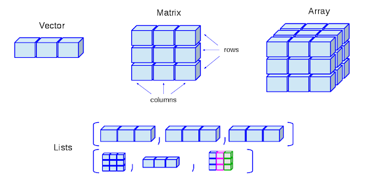
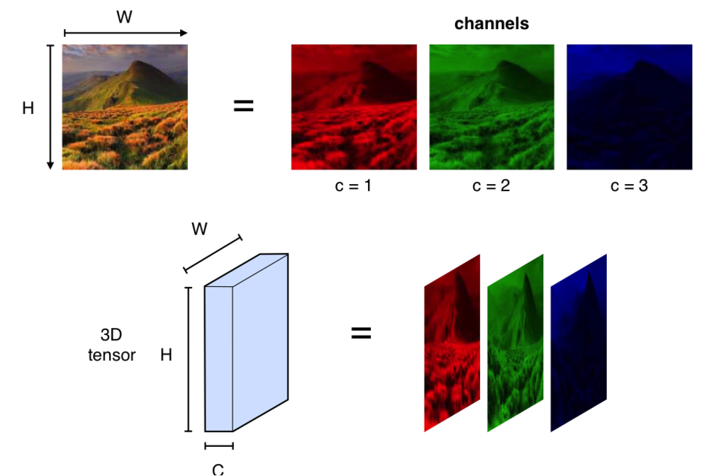
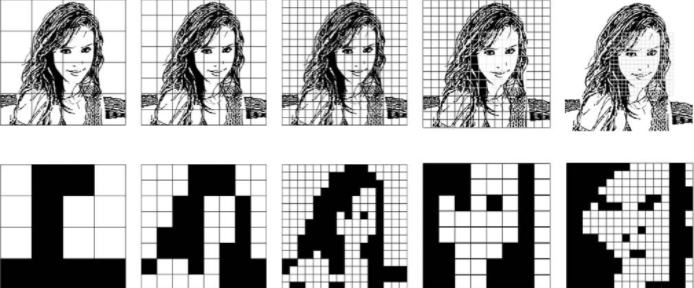
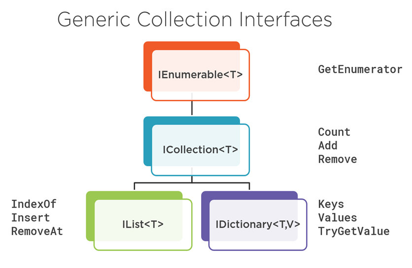

Trabajar con un grupo de objetos: arreglos, tipos genéricos, colecciones y enum.
Grupo fijo, fuertemente tipado.
Contenedor para un tipo parametrizable.
Grupos de tamaño dinámico.
Listas de constantes con nombre.
En muchas aplicaciones es necesario crear y administrar grupos de objetos relacionados. En C# hay dos formas de agruparlos.
Útiles para crear y trabajar con un número fijo de objetos fuertemente tipados.
El tamaño se define al crear la instancia y permanece constante durante toda su vida útil.
tamaño fijoEl grupo de objetos puede crecer y reducirse dinámicamente en tiempo de ejecución.
Más flexibles: se adaptan a las necesidades cambiantes de la aplicación.
tamaño dinámicoUn arreglo es un grupo de variables del mismo tipo de dato a las que nos referimos con un nombre común. A cada variable la llamamos elemento.
char, int, float, etc.
Cualquier imagen en color se representa como un tensor de tercer orden: sus tres dimensiones son alto, ancho y color (canales RGB).


<Tipo de dato> [ ] Nombre_del_arreglo;
int[] x; // elementos int string[] s; // elementos string double[] d; // elementos double Persona[] Estudiantes; // instancias de Persona
Fuente: geeksforgeeks.org/c-sharp-arrays
Un arreglo es un reference type (tipo por referencia), por lo que se usa la palabra clave new para crear una instancia.
type [ ] <Name_Array> = new <datatype>[size]; int[] intArray1 = new int[5]; int[,] b = new int[7,8]; // arreglo bidimensional string[] Autos = {"Volvo", "BMW", "Ford", "Mazda"};
System.Array.Array.Es un contenedor para un tipo de dato específico, usado al crear una instancia de una variable genérica. El tipo se define recién al instanciar.
public class MiClase<T> { T value; }
Por convención, los parámetros de tipo se prefijan con la letra T y deben ser únicos dentro de la declaración para evitar conflictos de nombres.
public class MiClase<T> { T value; public MiClase(T t) { value = t; } public T GetValor() { return value; } }
MiClase<int> Instancia = new MiClase<int>(); MiClase<string> Instancia = new MiClase<string>();
Dentro de la implementación, el parámetro T se sustituye por el tipo específico: en el primer caso por int, en el segundo por string.
Definimos una sola vez una Pila<T> y la usamos con cualquier tipo: string, int, objetos propios…
public class Pila<T> { private List<T> items = new List<T>(); public void Apilar(T item) => items.Add(item); public T Desapilar() { T ultimo = items[items.Count - 1]; items.RemoveAt(items.Count - 1); return ultimo; } public int Cantidad => items.Count; }
// pila de tareas (string) Pila<string> tareas = new Pila<string>(); tareas.Apilar("Estudiar"); tareas.Apilar("Practicar"); Console.WriteLine(tareas.Desapilar()); // "Practicar" Console.WriteLine(tareas.Cantidad); // 1 // la MISMA clase, ahora con int Pila<int> numeros = new Pila<int>(); numeros.Apilar(10); numeros.Apilar(20); Console.WriteLine(numeros.Desapilar()); // 20
Proporcionan una forma más flexible de trabajar con grupos de objetos. A diferencia de los arreglos, el grupo puede crecer y reducirse dinámicamente a medida que cambian las necesidades de la aplicación.
IEnumerable<T> → ICollection<T> → IList<T> / IDictionary<T,V>.
El .NET Framework provee muchas colecciones comunes, cada una diseñada para un propósito específico. Pertenecen a estos espacios de nombre:
Colecciones genéricas fuertemente tipadas: todos los elementos tienen el mismo tipo. Mejor rendimiento y mayor seguridad de tipos.
recomendadoDesde .NET Framework 4+. Operaciones eficientes y seguras para trabajo asincrónico: acceso a los elementos desde múltiples hilos.
multi-hiloLas clases guardan los elementos como objetos de tipo Object, no fuertemente tipados.
| Clase | Descripción |
|---|---|
Dictionary<TKey,TValue> |
Colección de pares clave/valor (key/value pair) a los que se accede por su clave. |
List<T> |
Lista de objetos accesible por un índice. Provee métodos para buscar, ordenar y modificar la lista. |
Queue<T> |
Colección organizada como FIFO (first in, first out). La conocemos como Fila o Cola. |
Stack<T> |
Colección de elementos LIFO (last in, first out). La conocemos como Pila. |
Una colección es una clase: hay que declarar una instancia antes de poder agregarle elementos.
// lista de objetos int List<int> MiLista = new List<int>(); // diccionario int → string Dictionary<int, string> MiDiccionario = new Dictionary<int,string>();
// agrego el 5 a la lista MiLista.Add(5); // agrego al diccionario con // la llave 1 → "Opción 1" MiDiccionario.Add(1, "Opción 1");
En el diccionario, el primer parámetro es la clave y el segundo el valor asociado.
List<T> es la colección genérica más usada: una lista de tamaño dinámico accesible por índice.
// crear una lista vacía List<string> frutas = new List<string>(); frutas.Add("Manzana"); frutas.Add("Banana"); frutas.Add("Naranja"); // inicializar con valores List<int> numeros = new List<int>() { 10, 20, 30 };
// acceso por índice (base 0) string primera = frutas[0]; // "Manzana" // recorrer con foreach foreach (string f in frutas) { Console.WriteLine(f); } // cantidad de elementos int total = frutas.Count; // 3
Además de agregar, List<T> provee métodos para buscar, insertar, quitar y ordenar.
// ¿contiene un elemento? bool hay = frutas.Contains("Banana"); // true // posición de un elemento int pos = frutas.IndexOf("Naranja"); // 2 // insertar en una posición frutas.Insert(1, "Pera"); // quitar por valor y por índice frutas.Remove("Manzana"); frutas.RemoveAt(0);
List<int> numeros = new List<int>() { 30, 10, 20 }; // agregar varios de una vez numeros.AddRange(new int[] { 40, 50 }); // ordenar de menor a mayor numeros.Sort(); // 10, 20, 30, 40, 50 // invertir el orden numeros.Reverse(); // vaciar la lista numeros.Clear();
Una lista se puede recorrer de varias maneras. Todas terminan apoyándose en el mismo mecanismo: el enumerador.
for con índicefor (int i = 0; i < frutas.Count; i++) { Console.WriteLine( frutas[i]); }
Control total del índice; útil para recorrer al revés o de a saltos.
foreachforeach (string f in frutas) { Console.WriteLine(f); }
La forma más simple y legible. No expone el índice.
IEnumerator<string> e = frutas.GetEnumerator(); while (e.MoveNext()) { Console.WriteLine( e.Current); }
Es lo que hace foreach por dentro: MoveNext() + Current.
IEnumerable<T> se pueden recorrer con foreach — por eso funciona igual en List, Dictionary, Queue o Stack.Una lista no se limita a tipos simples: puede guardar instancias de una clase propia.
class Persona { public string Nombre; public int Edad; } List<Persona> estudiantes = new List<Persona>(); estudiantes.Add(new Persona { Nombre = "Ana", Edad = 20 }); estudiantes.Add(new Persona { Nombre = "Luis", Edad = 22 });
// recorrer los objetos foreach (Persona p in estudiantes) { Console.WriteLine($"{p.Nombre} - {p.Edad}"); } // acceder por índice Persona primero = estudiantes[0]; // Ana // filtrar manualmente (mayores de 21) List<Persona> mayores = new List<Persona>(); foreach (Persona p in estudiantes) if (p.Edad > 21) mayores.Add(p);
LINQ permite consultar colecciones de forma declarativa, reemplazando los foreach de filtrado por expresiones más cortas.
using System.Linq; // filtrar: mayores de 21 List<Persona> mayores = estudiantes .Where(p => p.Edad > 21) .ToList(); // proyectar: solo los nombres List<string> nombres = estudiantes .Select(p => p.Nombre) .ToList();
// ¿hay algún mayor de edad? bool hayMayor = estudiantes.Any(p => p.Edad >= 18); // el primero que cumpla Persona ana = estudiantes.First(p => p.Nombre == "Ana"); // contar y promediar int cuantos = estudiantes.Count(p => p.Edad > 21); double promedio = estudiantes.Average(p => p.Edad);
IEnumerable<T>.Estructura de datos de tipo valor. Permite declarar una lista de constantes con nombre y referirnos a cada una por un identificador que las agrupa.
enum DiaDeLaSemana { Domingo = 0, Lunes = 1, Martes = 2, Miercoles = 3, Jueves = 4, Viernes = 5, Sabado = 6 }
DiaDeLaSemana MiDía = DiaDeLaSemana.Domingo;
Se puede definir el tipo subyacente, por ejemplo ushort, y asignar valores arbitrarios:
enum ErrorCode : ushort { Ninguno = 0, PerdidaDeConexion = 100, RecursoNoEncontrado = 404 }
Con el decorador [Flags], un enum puede representar una combinación de elecciones. Cada miembro se comporta como un campo de bits (potencias de 2).
[Flags] enum Dias { Ninguno = 0, Domingo = 1, Lunes = 2, Martes = 4, Miercoles = 8, Jueves = 16, Viernes = 32, Sabado = 64 }
Dias FindeSemana = Dias.Domingo | Dias.Sabado;
Se usan los operadores OR (|) para combinar y AND (&) para intersecar / comprobar qué opciones están activas.
Sumamente importante: consultar siempre la documentación oficial del framework, librería o API con la que estés trabajando.
docs.microsoft.com/es-es/dotnet/api/Usá arreglos cuando el tamaño es fijo, colecciones genéricas cuando crece dinámicamente, genéricos para reutilizar con seguridad de tipos y enum para constantes con nombre.
arregloList<T>Dictionary<K,V>Queue<T> · LIFO → Stack<T>→ siguiente · ← atrás · Espacio siguiente · Inicio primera · Fin última